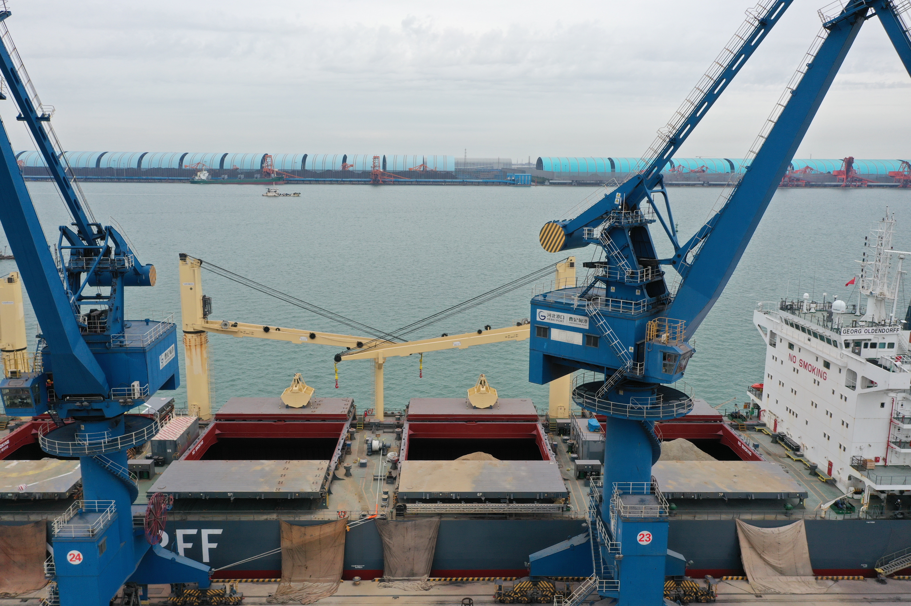
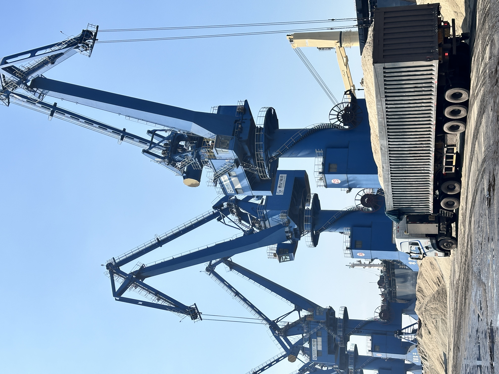

Egypt and Eritrea Launch Red Sea Shipping Line: How the Post-Hormuz Corridor Is Reshaping Bulk Trade to Africa
On 16 May 2026, Egypt and Eritrea finalized an agreement to launch a new shipping line connecting their Red Sea ports, with Egypt committing to share railway and port-building expertise. The move is the latest in a series of Red Sea corridor developments triggered by the ongoing Strait of Hormuz closure. For cement, clinker, and slag exporters, the emerging Red Sea logistics network is creating faster, more reliable routing options to East African and Horn of Africa markets.
埃及与厄立特里亚开通红海航运线：后霍尔木兹走廊如何重塑对非大宗贸易
2026 年 5 月 16 日，埃及与厄立特里亚正式达成协议，开通连接两国红海港口的新航运线，埃及承诺分享铁路与港口建设专长。此举是霍尔木兹海峡持续关闭引发的一系列红海走廊发展中的最新一环。对水泥、熟料与矿渣出口商而言，正在形成的红海物流网络正为东非及非洲之角市场创造更快捷、更可靠的航线选择。

On 16 May 2026, an official Egyptian delegation visiting Eritrea finalized a bilateral agreement to establish a new shipping line connecting Red Sea ports in both countries. The arrangement is more than a flag-on-a-map announcement. Egypt has committed to sharing railway and port-building expertise to support Eritrea's maritime infrastructure, while Eritrea offers strategic positioning on the southern Red Sea coastline — directly across from Yemen and at the gateway to the Bab-el-Mandeb strait. The agreement comes amid a broader regional realignment triggered by the Strait of Hormuz closure, which has forced shippers, traders, and governments across the Gulf and Horn of Africa to redraw their logistics assumptions.
1. Why the Egypt-Eritrea line matters for bulk cementitious cargoes
The new shipping line connects Egyptian Red Sea ports — likely including Safaga and Quseir, with potential Suez Canal integration — to the Eritrean ports of Massawa and Assab. For bulk dry cargoes such as clinker, GBFS, and GGBFS, this creates a direct maritime bridge between North African supply hubs and East African construction markets. Eritrea itself has limited domestic cement production capacity, while neighbouring Ethiopia, Sudan, and South Sudan represent large, import-dependent construction economies. The Egypt-Eritrea corridor effectively positions Eritrean ports as transshipment and redistribution points for bulk materials moving into the Horn of Africa interior.
Egypt's role in this corridor is not accidental. The country has spent the past decade expanding its port and logistics capacity on both the Mediterranean and Red Sea coasts, with Suez Canal development, Damietta container terminal upgrades, and Alexandria port modernisation all part of a national strategy to position Egypt as a transcontinental logistics hub. By exporting this expertise to Eritrea, Egypt is effectively extending its logistics sphere of influence southward along the Red Sea coastline, creating a contiguous corridor from the Mediterranean through the Suez Canal to the Bab-el-Mandeb and onward to the Indian Ocean. For bulk traders, this means a more integrated, government-backed logistics chain than the ad-hoc alternatives that have emerged since the Hormuz closure.

2. The land-bridge complement: Saudi Arabia and Egypt redraw Arabian Peninsula logistics
The Egypt-Eritrea maritime agreement is only one layer of a broader logistics restructuring now underway across the region. Saudi Arabia and Egypt are separately developing a new logistics corridor — often referred to as a land bridge — designed to move containerised and bulk cargo overland between the Gulf and the Mediterranean, bypassing the Hormuz chokepoint entirely. Saudi Arabia's Yanbu and Jeddah ports on the Red Sea coast are being linked by road and rail to eastern Gulf ports and industrial zones, with the aim of creating an alternative routing option for cargoes that would previously have transited Hormuz. Combined with the Egypt-Eritrea line, the region is forming a multi-modal network: maritime links on the Red Sea, land bridges across the Arabian Peninsula, and Egyptian port infrastructure connecting to both the Mediterranean and the African interior.
For cement and slag exporters based in Asia, this multi-modal network creates interesting routing possibilities. A cargo loaded in China or Southeast Asia could transit to a Saudi Red Sea port, move overland or by coastal feeder to an Egyptian port, then connect to the Eritrea line for final delivery into East Africa. While such a route is more complex than a direct voyage, it offers two advantages that are becoming increasingly valuable in the current environment: it avoids the Hormuz closure entirely, and it spreads risk across multiple jurisdictions and transport modes. In a market where buyers are beginning to treat supply security as a purchasing criterion alongside price, route redundancy is becoming a competitive advantage.

3. What exporters should watch as the corridor matures
The Egypt-Eritrea agreement was signed on 16 May 2026, and like any new maritime service, its operational reality will take months to stabilise. Exporters should monitor four variables. First, the actual port infrastructure at Massawa and Assab — while strategically located, these ports have not historically handled large volumes of dry bulk cargo, and their ability to receive panamax or supramax vessels with clinker or slag will depend on dredging, berth capacity, and loading equipment upgrades. Second, the frequency and reliability of the new shipping service. A bi-weekly or monthly service may be viable for containerised goods, but bulk cementitious materials typically require more regular vessel availability to match plant consumption schedules.
Third, the political and security environment in the southern Red Sea and Bab-el-Mandeb remains fluid. While the Hormuz closure triggered the current corridor innovation, any escalation affecting Red Sea or Gulf of Aden transit would reshape routing economics again. Fourth, the customs, documentation, and transshipment procedures between Egypt and Eritrea are still being established. For bulk exporters, clarity on cargo documentation, transit bonds, and cross-border logistics agreements will be essential before large-scale commercial shipments can flow smoothly. The corridor has strong strategic logic, but its commercial utility for dry bulk will depend on execution details that are only now being worked out.
For SENLAN Trading, operating from Tangshan Caofeidian with direct port access and consistent GBFS and GGBFS supply capability, the Egypt-Eritrea corridor and the broader Red Sea logistics reshaping create a clear strategic context. The Hormuz crisis has not merely disrupted existing routes; it has catalysed a permanent expansion of Red Sea maritime infrastructure that will outlast the current conflict. Egyptian port modernisation, Eritrean port development, Saudi land-bridge investment, and the new Egypt-Eritrea shipping line are all components of a larger trend: the Red Sea is becoming a more central, more capable bulk trade corridor than it was before March 2026. For exporters who understand these route dynamics early and build relationships with the port operators and forwarding networks emerging along this corridor, the current disruption is creating long-term commercial openings that did not exist two months ago.
2026 年 5 月 16 日，一支埃及官方代表团访问厄立特里亚期间，正式敲定了一项建立连接两国红海港口新航运线的双边协议。这一安排不仅仅是地图上的旗帜宣示。埃及承诺分享铁路与港口建设专长以支持厄立特里亚的海事基础设施，而厄立特里亚则提供其红海南海岸线的战略位置——正对也门，扼守曼德海峡入口。该协议出台的背景是霍尔木兹海峡关闭引发的大范围区域重新调整，这场危机迫使海湾与非洲之角各地的托运人、贸易商和政府重新绘制其物流假设。
1. 埃及-厄立特里亚航线为何对大宗胶凝材料货物意义重大
新航运线连接埃及红海港口——可能包括萨法加和古赛尔，并潜在整合苏伊士运河——与厄立特里亚的马萨瓦和阿萨布港。对熟料、GBFS 和 GGBFS 等干散货而言，这在北非供应枢纽与东非建筑市场之间建立了一座直接的海上桥梁。厄立特里亚本身的国内水泥产能有限，而邻国埃塞俄比亚、苏丹和南苏丹代表着庞大且依赖进口的建筑经济体。埃及-厄立特里亚走廊实际上将厄立特里亚港口定位为大宗材料进入非洲之角内陆的中转与再分拨节点。
埃及在这一走廊中的角色并非偶然。过去十年，该国持续扩展其在地中海与红海两岸的港口和物流能力，苏伊士运河开发、达米埃塔集装箱码头升级和亚历山大港现代化都是将埃及定位为跨大陆物流枢纽的国家战略组成部分。通过向厄立特里亚输出这些专长，埃及实际上正将其物流影响力沿红海海岸线向南延伸，打造一条从地中海经苏伊士运河到曼德海峡并延伸至印度洋的连续走廊。对大宗贸易商而言，这意味着一条比霍尔木兹关闭以来出现的临时替代方案更具整合性、且由政府背书的物流链条。
2. 陆桥补充：沙特与埃及重新绘制阿拉伯半岛物流版图
埃及-厄立特里亚海事协议只是目前正在该地区推进的更广泛物流重组的一个层面。沙特与埃及正另行开发一条新的物流走廊——通常被称为陆桥——旨在通过陆路在海湾与地中海之间运送集装箱和散装货物，完全绕过霍尔木兹瓶颈。沙特红海沿岸的延布和吉达港口正通过公路和铁路与东部海湾港口及工业区相连，目标是为此前需经霍尔木兹转运的货物创造替代路由选择。结合埃及-厄立特里亚航线，该地区正在形成一个多式联运网络：红海上的海运联系、穿越阿拉伯半岛的陆桥，以及连接地中海与非洲内陆的埃及港口基础设施。
对亚洲基地的水泥与矿渣出口商而言，这一多式联运网络创造了有趣的航线可能性。在中国或东南亚装船的货物可以转运至沙特红海港口，通过陆路或沿海支线运至埃及港口，再连接厄立特里亚航线最终交付东非。虽然这种航线比直航更复杂，但它提供了在当前环境下日益珍贵的两项优势：完全避开霍尔木兹封锁，并将风险分散到多个司法管辖区和运输模式中。在买家开始将供应安全与价格并列为采购标准的市场中，航线冗余本身正成为一种竞争优势。
3. 出口商在走廊成熟过程中应关注什么
埃及-厄立特里亚协议签署于 2026 年 5 月 16 日，与任何新海事服务一样，其运营现实需要数月才能稳定。出口商应关注四个变量。第一，马萨瓦与阿萨布港的实际港口基础设施——虽然地理位置优越，这些港口历史上并未处理大量干散货，其接收装载熟料或矿渣的巴拿马型或超大型船舶的能力将取决于疏浚、泊位容量和装卸设备升级。第二，新航运服务的频次与可靠性。 fortnightly 或月度服务可能对集装箱货物可行，但大宗胶凝材料通常需要更规律的船舶可用性以匹配工厂消耗进度。
第三，红海南部与曼德海峡的政治安全环境仍然不稳定。虽然霍尔木兹关闭催生了当前的走廊创新，但任何影响红海或亚丁湾通行的升级都将再次重塑航线经济。第四，埃及与厄立特里亚之间的海关、单证与转运程序仍在建立中。对大宗出口商而言，在大规模商业货物流通之前，货物单证、过境担保与跨境物流协议的清晰度将是必不可少的。该走廊拥有强大的战略逻辑，但其对干散货的商业效用将取决于正在制定中的执行细节。
对森蓝贸易而言，在唐山曹妃甸运营、拥有直通港口及稳定 GBFS 与 GGBFS 供应能力，埃及-厄立特里亚走廊与更广泛的红海物流重塑创造了清晰的战略背景。霍尔木兹危机不仅扰乱了现有航线；它更催化了红海海事基础设施的永久性扩张，这一扩张将超越当前冲突。埃及港口现代化、厄立特里亚港口开发、沙特陆桥投资以及新的埃及-厄立特里亚航运线，都是一个更大趋势的组成部分：红海正成为比 2026 年 3 月之前更核心、更有能力的大宗贸易走廊。对率先理解这些航线动态、并与该走廊上新兴的港口运营商和货运网络建立关系的出口商而言，当前的 disruption 正在创造两个月前尚不存在的长期商业机遇。